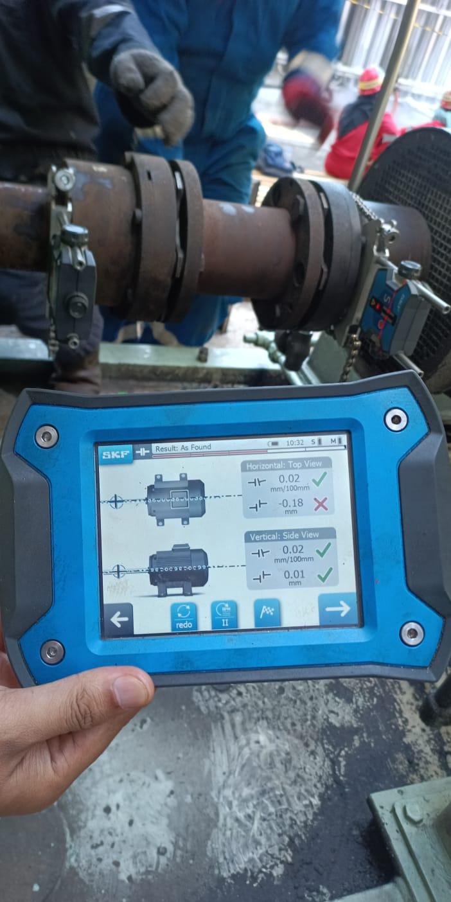
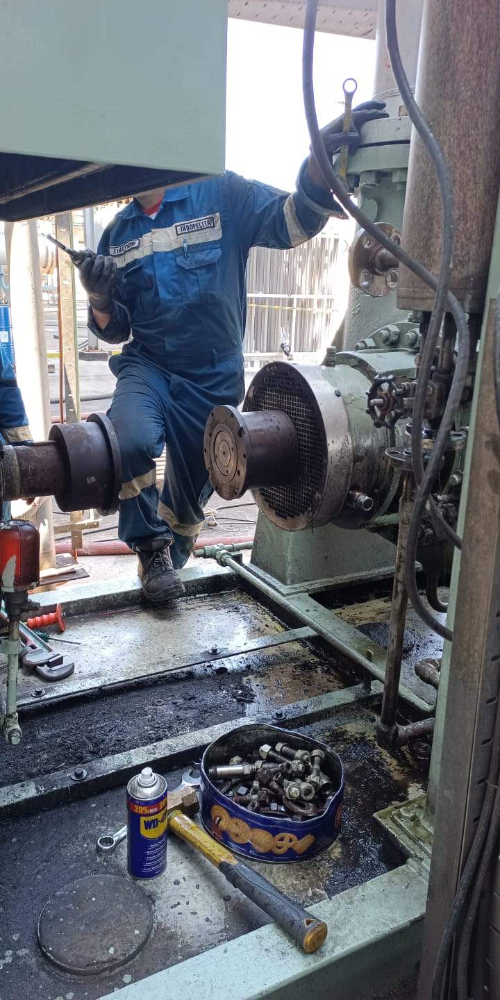
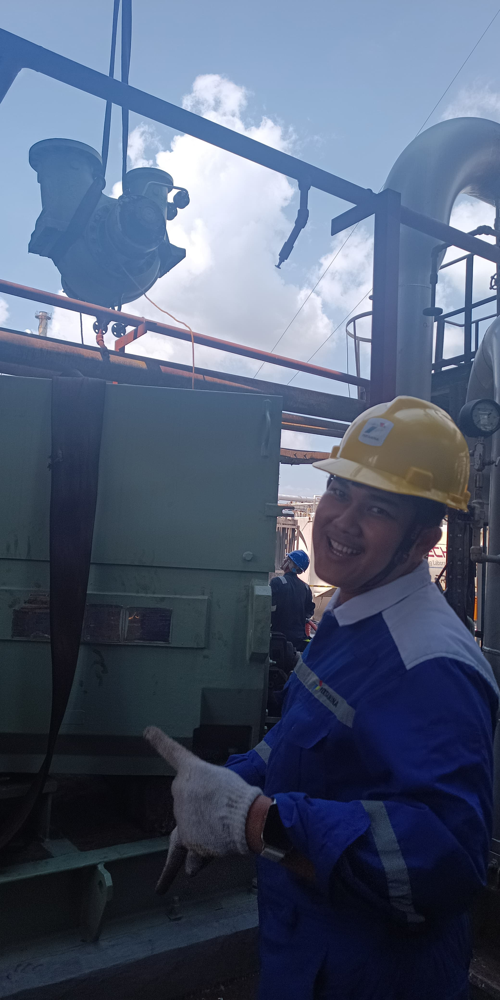
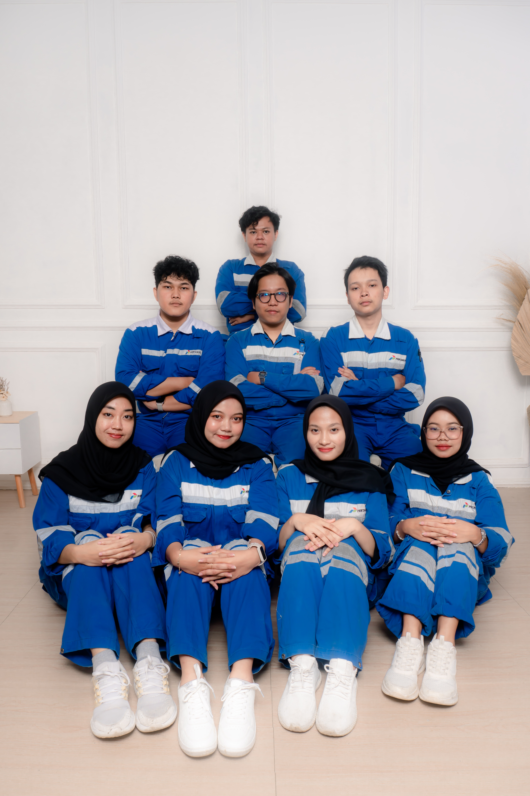

Overview
Maintenance exposure in a refinery environment.
Observed shutdown maintenance involving centrifugal pumps, turbine drivers, and compressors. The internship also included analysis of a centrifugal pump system using piping isometric drawings.
Documentation
This page collects selected field documentation and the official internship report. Additional approved photos can be added to this gallery as the documentation set is curated.

Verified documents
Internship Records
Review the technical internship report and the official certificate of internship completion.


